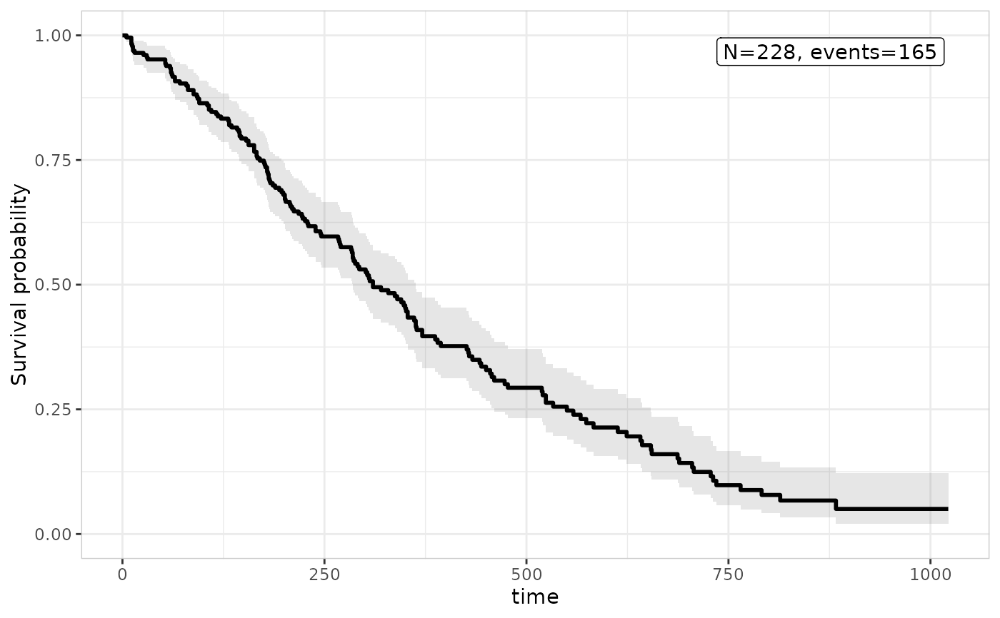

Adds the summary layer: a corner-placed text/label annotation, drawn
from a log-rank test comparing survival across stratify_by's levels
(the default style, survival::survdiff()), a supplied model's
er_summary() result, or purely descriptive observation/event counts
– depending on style. Singleton (a second call replaces the
previous one).
Usage
er_tte_add_summary(
object,
model = NULL,
keep_strata = NULL,
style = NULL,
conf_level = 0.95,
summary_args = list(),
...
)Arguments
- object
Partially constructed plot (has S3 class
er_tte).- model
A fitted time-to-event model implementing
er_summary(), orNULL(the default). Independent of whatever model, if any, was passed toer_tte_add_model()– only needed for builder styles (e.g.er_style_tte_summary_coefficients()/er_style_tte_summary_gof()) that produce model-based summaries; the default log-rank builder ander_style_tte_summary_n()both ignore it.- keep_strata
Logical, indicating whether this layer should be split by the plot's stratification variable; defaults to
TRUEifstratify_bywas set iner_tte(),FALSEotherwise.- style
Function drawing the annotation. Defaults to
er_style_tte_summary_logrank().- conf_level
Confidence level forwarded to
er_summary()(see?er_model_interface). Defaults to0.95. Ignored whenmodelisNULL.- summary_args
A named list of additional arguments forwarded to
er_summary(), distinct from...the same wayer_tte_add_model()'spredict_argsis distinct from its own...– see its "Details".- ...
Additional named arguments forwarded unchanged to
styleat build time (e.g.er_style_tte_summary_logrank()'sinset/label_size/label_colour/label_fill).
Details
The annotation is placed in whichever corner of the panel is
currently furthest from the plotted survival curve(s), computed the
same way er_plot_add_summary()'s corner-placed annotation avoids
the raw data – see er_style_tte_summary_logrank().
The default log-rank builder draws nothing on an unstratified object,
or one with only 1 stratum level present in the data, rather than
erroring – a log-rank test needs at least 2 groups to compare. Other
builders (e.g. er_style_tte_summary_n()) work regardless of
stratification.
Examples
library(survival)
lung |>
transform(sex = factor(sex, labels = c("Male", "Female"))) |>
er_tte(time, status == 2, stratify_by = sex) |>
er_tte_add_curve() |>
er_tte_add_summary() |>
plot()
 # a purely descriptive annotation, with no model or log-rank test at all
lung |>
er_tte(time, status == 2) |>
er_tte_add_curve() |>
er_tte_add_summary(style = er_style_tte_summary_n) |>
plot()
# a purely descriptive annotation, with no model or log-rank test at all
lung |>
er_tte(time, status == 2) |>
er_tte_add_curve() |>
er_tte_add_summary(style = er_style_tte_summary_n) |>
plot()
